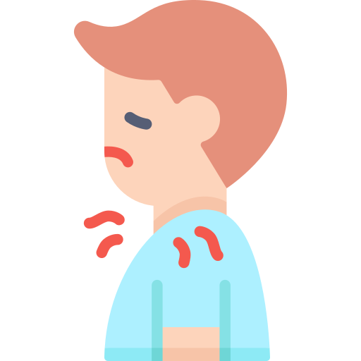

Macam-Macam Gejala Virus Corona
Demam
Suhu tubuh di atas 38 derajat Celsius

Batuk
batuk kering dan jarang berupa batuk berdahakKelelahan
rasa lelah terus-menerus selama beberapa mingguDiare
diare selama lebih dari 2 hari, nyeri pada bagian perutKehilangan Rasa dan Bau
biasanya muncul pada pasien di bawah usia 40 tahunNyeri Otot
cenderung sembuh dalam beberapa minggu setelah sembuh dari infeksi
Sakit Kepala
terjadi di tahap awal dan akhir infeksi, dengan rasa sakit yang menyiksa